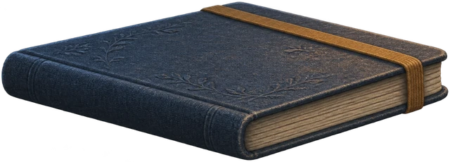

Для своего дела
Одно место.
Одна задача.
Время для неё.
Почитать несколько страниц. Дописать текст. Разобраться с мыслью, которую весь день откладывал.
За окном меняется пейзаж. Здесь можно остаться с тем, что сейчас важно.

Место для мысли, с которой хочется начать.
Устройся поудобнее
В этом купе у каждой вещи своё дело.
- Лампа
- Потяни за шнурок, чтобы включить или выключить тёплый свет над столом.
- Окно
- Нажми на верхнюю форточку, чтобы впустить прохладный воздух. Большое стекло остаётся на месте.
- Блокнот
- Открой и запиши, над чем работаешь. Пусть у этой мысли будет своё место.